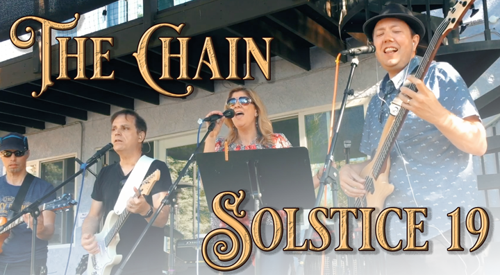

| HOME | MUSICIAN | SONG WRITER | PRODUCER |
| ★ JOIN EMAIL LIST ★ | ALBUMS | CHRISTMAS SONGS | VIDEOS | COLLABORATIONS | DOWNLOAD |
|

Behind The Scenes #1 When you hear the beginning of this song, you'll hear some guitar finger picking that sounds like it's being played on an acoustic guitar. But you'll see me picking what looks like a white Stratocaster. Those of you who play guitar know that a Stratocaster does not sound at all like an acoustic guitar. That guitar is called a Variax. It can play and sound just like a normal stratocaster. But it also has something very special. Internally, it has 60 different digitally sampled stringed instruments that can be played instead of the actual sound of the strings amplified through the pickups. Among the instruments available are some 6-string acoustic guitars and some 12-string acoustic guitars. I start by playing one of the 6-string guitars, and midway through the song I switch it to a 12-string. This is a great thing for guitar players who need to switch instrument sounds when playing live. Another pretty cool thing about the Variax is that multiple guitar tunings are available simply by turning a knob. Even though the strings are physically tuned to "standard tuning", you can turn the knob and the tuning will change automatically. The Chain is played with a "drop-D" tuning -- I get the "drop-D" tuning with just a quick turn of a knob -- no need to physically retune any strings, no need to switch guitars, etc. The Variax works like a normal guitar when you use a standard guitar cord. To use the sampled instruments and the different tunings it must be connected with an ethernet cable. I played that gig with an ethernet cable in my guitar :-) This is not a plug for the Variax and there was no sponsorship or anything... it's just an explanation for those of you who are watching an electric guitar being played but hearing an acoustic guitar. No tricks going on here. That's actually what it sounds like when we play live. -Steve |